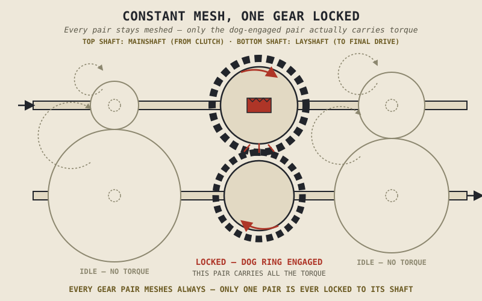

A motorcycle can bang off a full-throttle upshift in a fraction of a second, sometimes without even touching the clutch, in a way that would grind and crunch mercilessly in a car's gearbox. That isn't a difference in skill or aggression — it's a fundamentally different mechanism underneath, built specifically for speed and directness rather than the forgiving smoothness a car's gearbox is designed around. This chapter explains that mechanism, called constant mesh, and why it looks nothing like the synchromesh system most people picture when they hear "manual gearbox."
Chapter 3.1 named the gearbox's job: keeping the engine within the strong, efficient portion of the torque curve Chapter 2.12 described, across a road speed range no single fixed ratio could cover. This chapter explains exactly how a motorcycle gearbox is built to deliver on that job, one gear change at a time.
Constant Mesh: Every Gear Is Always Turning
Inside a motorcycle gearbox, two parallel shafts run side by side: a mainshaft, connected through the clutch Chapter 3.2 described to the engine's output, and a layshaft, connected onward to the final drive Chapter 3.6 will cover. Along each shaft sit several gears, one for each available ratio, and critically, every gear on the mainshaft is permanently meshed with its corresponding partner on the layshaft — all the time, regardless of which gear is actually selected. This is what "constant mesh" means, and it's the first surprise for anyone picturing a car's gearbox: nothing physically slides gears into or out of contact with each other the way a manual car transmission's synchro collars do.
If every gear pair is always meshed, something else has to determine which single pair is actually transmitting power at any moment — and that's the job of a sliding dog engagement mechanism, not the gear teeth themselves.
Dogs, Not Synchros: Why Motorcycle Shifts Are So Fast
Most gears on these shafts spin freely on their shaft even while permanently meshed with their partner, transmitting no power at all, because they aren't locked to the shaft they're riding on. A sliding dog ring, moved by the shift mechanism Chapter 3.5 will describe in full, physically locks one specific gear to its shaft by engaging a set of interlocking teeth — dogs — cut into the side of that gear. Once locked, that single gear pair carries all the torque passing through the gearbox; every other gear pair keeps spinning, fully meshed, entirely idle.
Changing gear means sliding that dog ring out of one gear's dogs and into the next gear's dogs, a fast, direct, essentially binary engagement — nothing like the friction cones a car's synchromesh gearbox uses to gradually match rotational speeds before allowing a gear to engage smoothly. That's precisely why motorcycles can shift as quickly as they do, and why experienced riders can often complete a well-timed upshift under load without using the clutch at all — the dog engagement doesn't need the gradual speed-matching a synchro provides, provided the shift happens at the right moment.
A car's synchromesh gently coaxes two spinning parts to match speed before locking them together. A motorcycle's dog engagement skips that entirely — it locks almost instantly, trading a synchro's forgiveness for genuine speed.

A mainshaft and layshaft shown with several gear pairs in constant mesh, one pair highlighted as locked via an engaged dog ring while the rest spin freely and idle.
Sequential, Not Random Access
A motorcycle gearbox can only move to the next or previous gear in order — first to second, second to third, never straight from second to fifth — because the shift mechanism physically steps through gears one position at a time, a full explanation Chapter 3.5 takes on directly. This sequential design is a natural consequence of the dog-engagement architecture this chapter has described: a mechanism built for fast, direct engagement between adjacent ratios doesn't need, and generally doesn't provide, the ability to jump arbitrarily between gears the way selecting a specific slot in a car's shift pattern can.
A Common Misconception, Cleared Up Early
It's a reasonable assumption, never having looked inside either one, that a motorcycle's gearbox and a car's manual gearbox work essentially the same way — both are "manual transmissions," after all. They don't. A car's synchromesh design prioritizes forgiving, smooth engagement even when engine and road speed aren't perfectly matched, at the cost of shift speed. A motorcycle's constant-mesh, dog-engaged design prioritizes fast, direct, minimal-loss engagement, at the cost of forgiveness — a poorly timed or badly matched motorcycle shift produces an audible, mechanical clunk rather than a synchro's smooth absorption of the mismatch, and in a worn or damaged gearbox, a mistimed shift can produce a false neutral or a missed gear entirely. This is a specific instance of a pattern this book has returned to before, back in Chapter 1.2's point that a motorcycle isn't simply "half a car" — two things that look superficially similar from the outside can be built on genuinely different mechanical principles underneath.
Where This Leads
This chapter explained how a gear gets selected and locked into place. It deliberately left out why there are usually five or six of them, spaced the way they are, and what actually happens to torque and road speed as the dog ring moves from one gear pair to the next. Chapter 3.4 takes up gear ratios directly — the actual numbers behind each gear, and what they trade against each other.
Key Concepts to Remember
- A motorcycle gearbox uses constant mesh: every gear pair on the mainshaft and layshaft stays permanently engaged with its partner, regardless of which gear is currently selected.
- A sliding dog ring locks one specific gear to its shaft at a time, using interlocking teeth rather than the friction cones a car's synchromesh gearbox relies on.
- Dog engagement is fast and direct rather than forgiving, which is why motorcycle shifts happen so much quicker than a car's, and why a mismatched shift produces a clunk rather than a synchro's smooth absorption.
- A motorcycle gearbox is sequential by design, moving only to the next or previous gear in order, as a natural consequence of its dog-engagement architecture.
- Motorcycle and car manual gearboxes are not the same mechanism despite the shared "manual transmission" label — a specific instance of the pattern Chapter 1.2 first established, that superficially similar things can work on genuinely different principles.
Cross-References
| ← Ch. 3.1 | Named the gearbox's job; this chapter explains the mechanism — constant mesh and dog engagement — that actually performs it. |
| ← Ch. 3.2 | Described the clutch's role in launching from a stop; this chapter shows why the gearbox's own dog engagement doesn't always require the clutch to shift once moving. |
| ← Ch. 1.2 | Established that superficially similar machines can rest on genuinely different mechanical principles; this chapter applies that directly to motorcycle versus car gearboxes. |
| → Ch. 3.4 | Covers gear ratios directly — the actual torque and speed trade-offs behind each gear this chapter showed how to select. |
| → Ch. 3.5 | Covers the shift drum and selector fork mechanism that physically moves the dog rings this chapter introduced. |